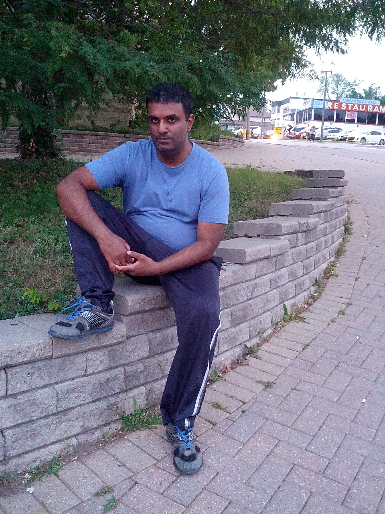
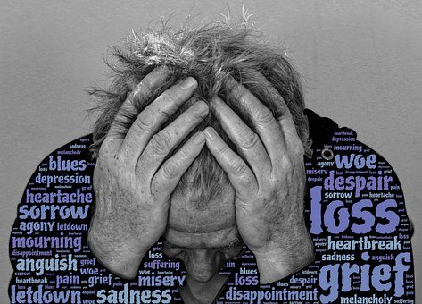
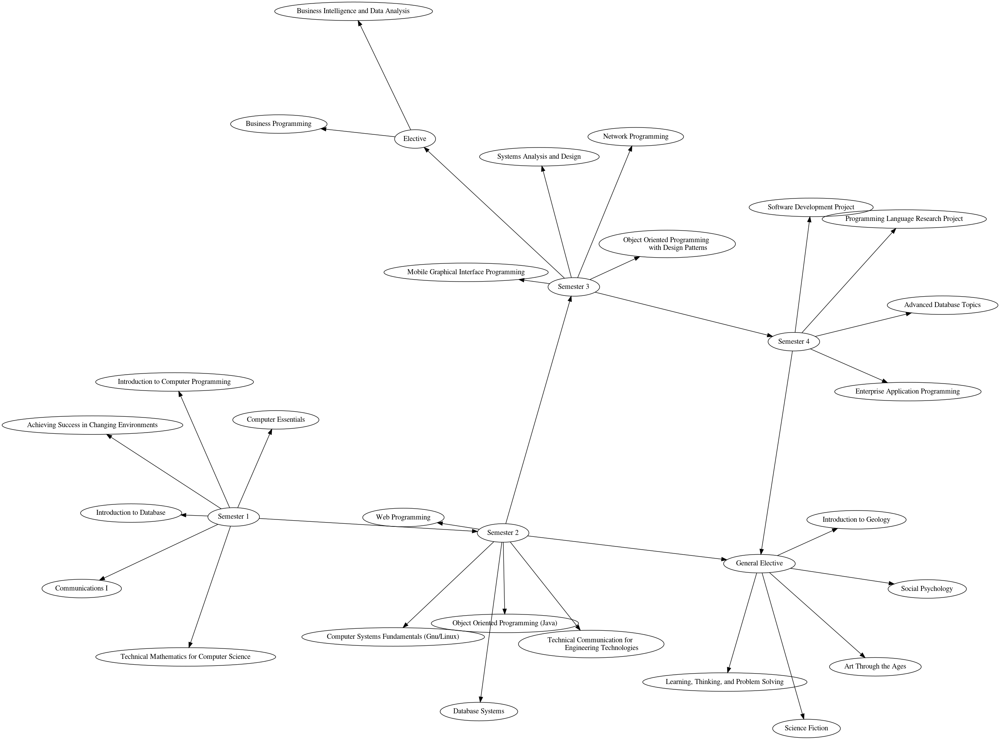
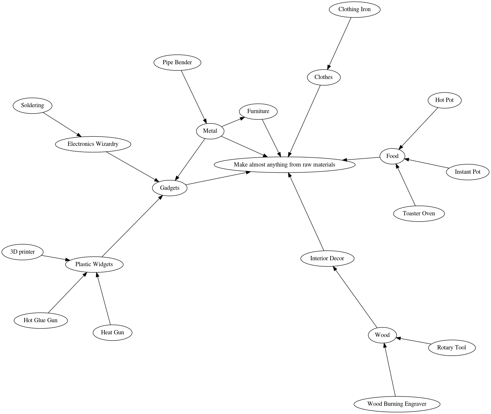

Umar's Salvation
- I am Umar Nawaz.

- I live in anguish.

- My wife left me.
- I live on welfare.
- I am almost homeless. couch surfing with family.
- I am hoping this home page saves me.
- I live in Toronto, Canada.
Calendar
Hygiene and Grooming
- I am working towards to improving my hygiene.
- I have always had hygiene issues stemming
from my poverty upbringing. It is not
and inherent problem, simply it is a
result of poverty a few decades ago.
- I need to pay attention to my wardrone.
- I will put in place a system of hygiene
monitoring, maybe with electronic sensors,
or a manually operated checklist and
infrastructure around it.
Finances
Education
- I am hoping to getting a college diploma
to change my financial situation from
living on welfare handouts from the
government to an earned income.
Algonquin College : Computer Programmer

Posessions
